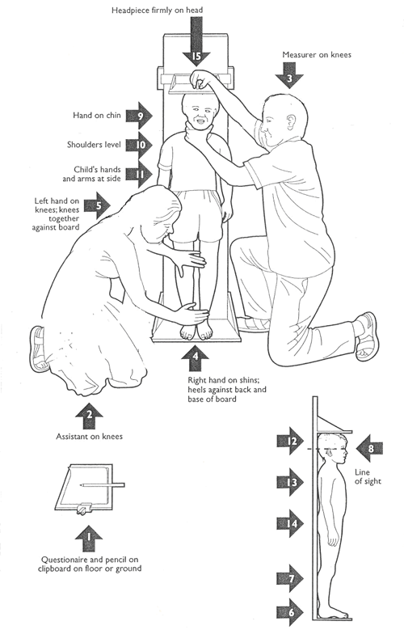
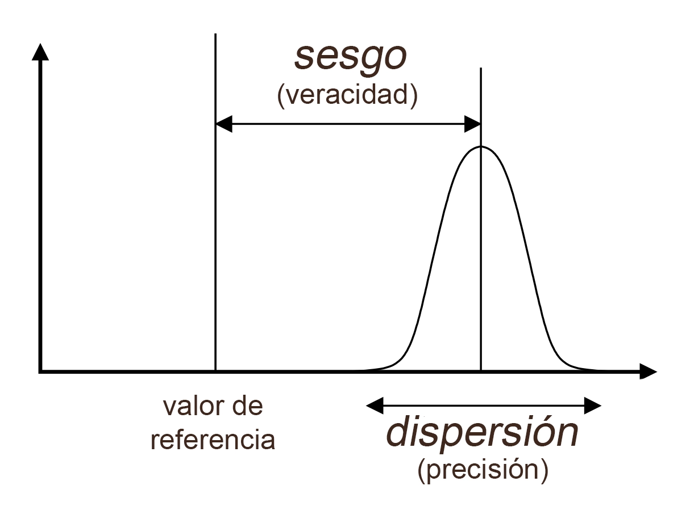
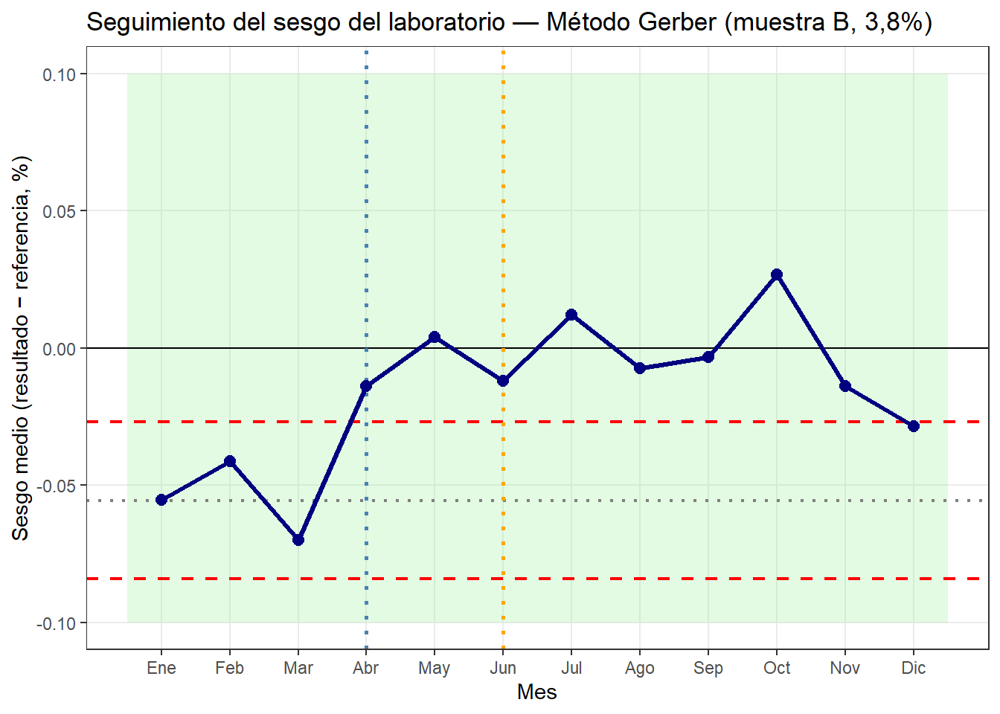

Al finalizar este capítulo, el alumno será capaz de:
Identificar las principales fuentes de error en un análisis de laboratorio y clasificarlas según su origen.
Distinguir entre veracidad y precisión según la norma ISO 5725-1:2023, y reconocer cada tipo de error en datos reales.
Visualizar y comparar el comportamiento analítico de diferentes analistas mediante boxplot y dotplot.
Calcular el sesgo y la desviación típica de repetibilidad para cada analista a partir de un dataset de resultados.
Interpretar los resultados de un estudio de repetibilidad y proponer acciones correctoras adecuadas al tipo de error detectado.
Conceptos clave: medida, fuente de variación, veracidad, precisión, exactitud, sesgo, repetibilidad, reproducibilidad, ISO 5725-1:2023.
16.1 ¿Qué es una medida?
Una medida es el resultado de la acción de medir: comparar lo que queremos cuantificar con un patrón de referencia, siguiendo un procedimiento definido, con un instrumento adecuado, y por parte de uno o varios analistas.
En apariencia, el proceso parece sencillo. Sin embargo, si lo analizamos con atención, veremos que hay múltiples elementos que pueden hacer que el resultado no sea tan fiable como esperamos. Pensemos en algo tan cotidiano como medir la altura de una persona con una cinta métrica:
Medición de la altura de un niño
¿Está el niño descalzo? ¿Tiene las rodillas rectas? ¿Está apoyado en un plano vertical? ¿La posición de los ojos del analista es perpendicular a la escala? ¿La cinta métrica está homologada? Cada uno de estos elementos puede introducir un error diferente en el resultado.
La descripción detallada del procedimiento, junto con la especificación del instrumento y sus requisitos de calibración, constituye lo que se conoce como método analítico. Un buen método analítico reduce al mínimo la influencia del analista y del instrumento en el resultado, garantizando que diferentes personas obtengan resultados comparables en diferentes momentos y lugares.
La Organización Mundial de la Salud, por ejemplo, define procedimientos muy precisos para la medición de peso y talla en niños, porque pequeños errores sistemáticos en esas medidas tienen consecuencias directas en el diagnóstico nutricional a escala global.

Medición de la altura de un niño según la OMS
16.2 Las fuentes de variación en el laboratorio
En un laboratorio de quesería, las fuentes de variación más habituales son:
El analista. La técnica personal, la experiencia, la fatiga o simplemente un hábito incorrecto en la lectura del instrumento pueden introducir diferencias entre personas. Dos analistas que siguen el mismo método pueden obtener resultados distintos de forma sistemática.
El instrumento. Un butirómero descalibrado, una centrífuga con velocidad irregular, un baño maría con temperatura inestable: todos ellos introducen variación en el resultado con independencia de la habilidad del analista.
El método. La temperatura de la muestra en el momento del análisis, el tiempo de reposo antes de la lectura, la forma de homogeneizar la muestra: son condiciones que el procedimiento debe especificar con precisión para que no sean una fuente de variación adicional.
La muestra. Una muestra heterogénea o que ha sufrido degradación desde su recogida hasta el análisis introduce una variación que no es del sistema de medición sino del objeto medido.
En la práctica, lo que observamos en los resultados analíticos es la suma de todas estas fuentes. El objetivo del análisis del sistema de medición es separar y cuantificar cada una de ellas.
16.3 Veracidad y precisión: la norma ISO 5725-1:2023
La norma internacional ISO 5725-1:2023 (Accuracy of measurement methods and results — Part 1: General principles and definitions) [1] establece la terminología y los conceptos para evaluar la calidad de un método analítico. La tabla siguiente fija los tres términos clave con su equivalente en inglés, para evitar ambigüedades en el uso cotidiano:
Término español
Término inglés
Definición resumida
Exactitud
accuracy
Proximidad entre un resultado y el valor verdadero. Engloba veracidad y precisión
Veracidad
trueness
Proximidad entre la media de muchos resultados y el valor verdadero. Ausencia de sesgo sistemático
Precisión
precision
Proximidad entre resultados repetidos obtenidos en condiciones definidas
Distingue tres conceptos que en el uso cotidiano se confunden con frecuencia:
Exactitud (accuracy): término general que describe la proximidad entre un resultado de medida y el valor verdadero. Engloba dos componentes independientes.
Veracidad (trueness): proximidad entre la media de un gran número de resultados y el valor verdadero o de referencia. Cuando un método no es verídico, produce un sesgo sistemático: los resultados están desplazados de forma consistente hacia arriba o hacia abajo.
Precisión (precision): proximidad entre resultados independientes obtenidos en condiciones definidas. Un método preciso produce resultados muy parecidos entre sí, aunque no necesariamente cercanos al valor verdadero.
NotaUna aclaración terminológica
En el uso coloquial, “exacto” y “preciso” se usan como sinónimos. En metrología, son conceptos distintos: un método puede ser muy preciso (resultados muy reproducibles) pero poco verídico (con sesgo), o verídico en promedio pero poco preciso (con mucha dispersión). La norma ISO 5725-1:2023 reserva el término exactitud para cuando ambas condiciones se cumplen simultáneamente.
La imagen de las dianas ilustra las cuatro combinaciones posibles:
Veracidad y precisión: las cuatro combinaciones posibles
Alta veracidad, alta precisión: los impactos están agrupados y centrados. Es el objetivo.
Alta veracidad, baja precisión: los impactos están dispersos pero centrados en promedio. Hay variabilidad pero no sesgo.
Baja veracidad, alta precisión: los impactos están agrupados pero desplazados del centro. Hay sesgo sistemático pero buena repetibilidad.
Baja veracidad, baja precisión: los impactos están dispersos y desplazados. El peor caso.
En el laboratorio de quesería, cada uno de estos cuadros tiene una causa distinta y una solución distinta. Un analista con baja veracidad (sesgo) necesita revisar su técnica o recalibrar su instrumento. Un analista con baja precisión necesita trabajar la consistencia de su procedimiento.
Antes de hablar de cómo corregir los problemas, conviene precisar los términos. El sesgo es una desviación sistemática y constante entre los resultados y el valor de referencia: todos los resultados se desplazan en la misma dirección y en una magnitud similar. Es una forma de variabilidad, pero predecible y direccional. La dispersión (o variabilidad aleatoria) es la fluctuación irregular de los resultados alrededor de su propia media: cada medida difiere de las anteriores de forma impredecible, sin una dirección consistente.

Representación del sesgo y la dispersión
En términos estadísticos, el sesgo se mide con la diferencia entre la media de los resultados y el valor de referencia; la dispersión se mide con la desviación típica de repetibilidad \(s_r\). Ambos son componentes de la variabilidad total del sistema de medición, pero tienen causas distintas y requieren soluciones distintas.
Nota¿Qué es más fácil de corregir: un sesgo o una dispersión alta?
En la práctica de mejora de procesos, un método con baja veracidad pero alta precisión es generalmente más fácil de corregir que uno con alta veracidad pero baja precisión. Si los resultados son consistentes entre sí aunque estén desplazados del valor de referencia, la causa suele ser única e identificable: un hábito incorrecto de lectura, un instrumento descalibrado, un reactivo en mal estado. Corregir esa causa desplaza todos los resultados hacia el valor correcto de forma inmediata.
En cambio, una dispersión alta indica que hay múltiples fuentes de variación actuando de forma aleatoria: temperatura del baño maría inestable, tiempo de centrifugación variable, homogeneización incorrecta. Reducir la dispersión requiere identificar y controlar cada una de esas fuentes, lo que suele ser un trabajo más largo y sistemático.
Una excepción importante: si un analista tiene dispersión alta pero los demás no, el problema no es el método sino ese analista concreto. Si todos los analistas tienen dispersión alta con el mismo método, hay que revisar el método o las condiciones del análisis, no la formación individual.
16.4 Repetibilidad y reproducibilidad
Dentro del concepto de precisión, la norma ISO 5725 distingue dos niveles:
Repetibilidad: variación obtenida cuando el mismo analista analiza la misma muestra varias veces en las mismas condiciones (mismo día, mismo instrumento, mismo procedimiento). Mide la consistencia interna de un analista.
Reproducibilidad: variación obtenida cuando diferentes analistas, en diferentes momentos o laboratorios, analizan la misma muestra. Mide la comparabilidad entre analistas o entre laboratorios.
La desviación típica de repetibilidad (\(s_r\)) y la desviación típica de reproducibilidad (\(s_R\)) son las medidas numéricas de cada uno de estos conceptos. Por definición, \(s_R \geq s_r\): la variación entre analistas siempre es mayor o igual que la variación dentro de un mismo analista.
Cómo se calculan \(s_r\) y \(s_R\)
Desviación típica de repetibilidad (\(s_r\)):
Para cada combinación de analista y muestra, calculamos la desviación típica de las repeticiones. Si un analista ha realizado \(n\) repeticiones sobre la misma muestra, obteniendo resultados \(x_1, x_2, \ldots, x_n\):
donde \(\bar{x}\) es la media de las repeticiones de ese analista sobre esa muestra. Esta fórmula es idéntica a la desviación típica que vimos en el capítulo 7, aplicada ahora a las repeticiones de cada analista.
Si el estudio tiene varios analistas y varias muestras, \(s_r\) se obtiene como la media de las desviaciones típicas individuales de cada combinación analista-muestra.
Desviación típica de reproducibilidad (\(s_R\)):
La reproducibilidad mide la variación total cuando cambian tanto el analista como las condiciones. Para calcularla, tomamos todas las medidas de todos los analistas sobre la misma muestra y calculamos su desviación típica global:
donde \(k\) es el número de analistas, \(n\) el número de repeticiones por analista, y \(\bar{\bar{x}}\) la media global de todas las medidas sobre esa muestra. En la práctica, \(s_R\) siempre es mayor que \(s_r\) porque incorpora tanto la variación dentro de cada analista como la variación entre analistas.
Diseño del estudio: por qué son necesarias las repeticiones y los analistas
Para poder separar y cuantificar las dos fuentes de variación —la variación dentro de un analista y la variación entre analistas— el estudio debe estar diseñado de forma que ambas sean observables en los datos. Esto tiene consecuencias directas sobre qué datos hay que recoger y cómo organizarlos.
Por qué necesitamos repeticiones. Si cada analista analiza cada muestra una sola vez, no podemos estimar \(s_r\): no tenemos información sobre cuánto varía ese analista cuando repite el análisis. Con una sola observación por analista y muestra no podemos distinguir si una diferencia entre dos analistas es variabilidad aleatoria o un sesgo real. Las repeticiones nos dan acceso a la variación interna de cada analista.
Por qué necesitamos varios analistas. Si solo hay un analista, no podemos estimar \(s_R\): toda la variación observada es variación interna de ese analista. Necesitamos al menos dos analistas para poder estimar la variación entre personas, y cuantos más analistas haya, más fiable será la estimación de \(s_R\).
Por qué necesitamos varias muestras. Un analista puede tener un comportamiento distinto según el rango de valores. Por ejemplo, un error de lectura en el butirómetro puede ser más pronunciado con valores de grasa altos que con valores bajos. Analizar muestras de diferente nivel nos permite comprobar que el comportamiento del analista es consistente en todo el rango operativo del método.
El diseño mínimo práctico para un estudio de repetibilidad es, por tanto: varios analistas × varias muestras × varias repeticiones. En nuestro caso: 5 analistas × 3 muestras × 3 repeticiones = 45 análisis.
El formato de los datos: de la hoja de recogida al formato tidy
En la práctica, cuando se recogen datos de un estudio de repetibilidad en el laboratorio, es natural organizarlos en una tabla con los analistas en columnas y las repeticiones en filas. Esta disposición, llamada formato ancho, es cómoda para la recogida manual y fácil de leer de un vistazo:
Muestra
Rep.
Analista 1
Analista 2
Analista 3
Analista 4
Analista 5
B_media
1
3,86
3,82
3,87
3,41
3,85
B_media
2
3,79
3,65
3,91
3,56
3,98
B_media
3
3,79
3,66
3,73
3,45
3,84
Sin embargo, Python y R trabajan con un formato diferente llamado formato tidy (o formato largo), en el que cada fila es una observación individual y cada columna es una variable. El mismo dato en formato tidy tiene este aspecto:
analista
muestra
valor_referencia
repeticion
resultado
Analista_1
B_media
3,8
1
3,86
Analista_1
B_media
3,8
2
3,79
Analista_1
B_media
3,8
3
3,79
Analista_2
B_media
3,8
1
3,82
Analista_2
B_media
3,8
2
3,65
…
…
…
…
…
En el formato tidy, cada variable ocupa exactamente una columna: el analista, la muestra, el número de repetición y el resultado son cuatro variables distintas, no cuatro columnas de resultados mezcladas. Este formato puede parecer menos legible a primera vista, pero tiene una ventaja fundamental: permite a Python y R agrupar, filtrar y calcular estadísticos por cualquier combinación de variables con una sola instrucción.
Si los datos se han recogido en formato ancho, hay que convertirlos a formato tidy antes de analizarlos. En Excel esto se puede hacer con Power Query; en Python con pd.melt(); en R con pivot_longer().
NotaLa columna valor_referencia
En metrología, el valor de referencia (o valor de referencia convencionalmente verdadero, según ISO 5725-1:2023) es el valor asignado a una muestra que se usa como base para evaluar el sesgo de un método o de un analista. No es necesariamente el valor “verdadero” en sentido absoluto —que en la práctica nunca se conoce con exactitud perfecta— sino el mejor valor disponible para el propósito del estudio.
En la práctica de laboratorio, el valor de referencia puede obtenerse de varias formas:
Un material de referencia certificado (MRC), cuyo valor ha sido establecido por un organismo de metrología reconocido.
El resultado de un método de referencia independiente y más preciso que el método en estudio.
El valor consensuado entre un grupo amplio de laboratorios participantes en un ensayo interlaboratorio.
En nuestro dataset simulado, el valor de referencia es el valor utilizado en la simulación para generar los resultados de cada analista. En un estudio real, esta columna se rellenaría con el valor certificado o de referencia de cada muestra.
Ejemplo de cálculo manual con los datos de la muestra B (media)
Tomamos los resultados de la muestra B (valor de referencia = 3,8%) para los cinco analistas y calculamos paso a paso \(s_r\) y \(s_R\).
Paso 1 — Media y desviación típica de repetibilidad por analista:
Analista
Rep. 1
Rep. 2
Rep. 3
Media
\(s_r\)
1
3,86
3,79
3,79
3,813
0,040
2
3,82
3,65
3,66
3,710
0,096
3
3,87
3,91
3,73
3,837
0,092
4
3,41
3,56
3,45
3,473
0,076
5
3,85
3,98
3,84
3,890
0,077
La desviación típica de repetibilidad media para esta muestra es:
La reproducibilidad (\(s_R = 0{,}178\%\)) es más del doble que la repetibilidad media (\(s_r = 0{,}076\%\)), lo que indica que la variación entre analistas es la fuente de variación dominante en este estudio. Esto es coherente con la presencia del analista 4, cuyo sesgo sistemático contribuye de forma importante a la dispersión global.
Cálculo en Excel
Para calcular \(s_r\) y el sesgo en Excel, la forma más práctica es organizar los datos en formato ancho con una tabla auxiliar de estadísticos. Para cada analista y muestra:
La media de las repeticiones se calcula con =PROMEDIO(rango_repeticiones)
La desviación típica de repetibilidad se calcula con =DESVEST.M(rango_repeticiones) (que usa \(n-1\) en el denominador, igual que la fórmula de la sección anterior)
El sesgo se calcula como =media - valor_referencia
La desviación típica de reproducibilidad para una muestra se obtiene calculando =DESVEST.M(rango_todos_los_resultados) sobre todas las medidas de todos los analistas para esa muestra.
TipConvertir formato ancho a tidy en Excel
Si los datos están en formato ancho y quieres analizarlos en Python o R, puedes convertirlos a formato tidy en Excel usando Power Query: selecciona la tabla, ve a Datos > Obtener y transformar > Desde tabla, selecciona las columnas de analistas y usa Anular dinamización de columnas. El resultado es una tabla en formato tidy lista para exportar como CSV.
16.5 Caso práctico: evaluación de analistas en el método Gerber
El método Gerber es uno de los métodos de referencia para la determinación de grasa en leche. Es un método volumétrico que los alumnos de tecnología láctea aprenden y practican en el laboratorio. Su resultado depende de varios factores de técnica personal: la temperatura del baño maría, el tiempo y la velocidad de centrifugación, y sobre todo la lectura correcta del menisco en el butirómetro.
Vamos a analizar los resultados de un estudio de repetibilidad en el que cinco analistas han determinado el contenido en grasa de tres muestras de leche con diferente contenido graso, realizando tres repeticiones cada uno.
import pandas as pdimport matplotlib.pyplot as pltimport seaborn as snsimport numpy as npdf = pd.read_csv("datos/grr_gerber.csv", sep=';', decimal=',', encoding='ISO-8859-1')print(f"Dimensiones: {df.shape}")
El primer paso es visualizar todos los resultados. Usamos un boxplot por analista con los puntos individuales superpuestos, separando las tres muestras por color:
La tabla y el gráfico permiten clasificar claramente a los cinco analistas:
Analistas 1 y 2 muestran un sesgo prácticamente nulo y una desviación típica de repetibilidad baja. Son analistas con buena veracidad y buena precisión.
Analista 3 presenta un sesgo leve pero consistente hacia valores altos, con una dispersión algo mayor que los anteriores. Probablemente redondea sistemáticamente al alza en la lectura de la columna de grasa del butirómetro. La solución pasa por revisar la técnica de lectura.
Analista 4 destaca por tener una dispersión muy baja (alta repetibilidad) pero un sesgo negativo importante: sus resultados son sistemáticamente bajos en las tres muestras. Es el caso típico de un error de posición del ojo al leer el menisco del butirómetro: alta precisión, baja veracidad. Este analista necesita corrección en la técnica de lectura, no en la consistencia de su procedimiento.
Analista 5 presenta la situación opuesta: sesgo nulo en promedio, pero una dispersión muy alta. Sus resultados son impredecibles: a veces acertados, a veces muy alejados del valor de referencia. El origen más probable es una técnica irregular: temperatura del baño maría inestable, tiempo de centrifugación variable, o dificultad para homogeneizar la muestra antes del análisis.
NotaDos tipos de error, dos soluciones distintas
El analista 4 y el analista 5 tienen errores de magnitud comparable, pero de naturaleza completamente diferente. El analista 4 necesita corregir un hábito concreto y repetible; el analista 5 necesita trabajar la consistencia de todo su procedimiento. Confundir los dos tipos de error llevaría a acciones incorrectas: no sirve de nada dar más formación teórica al analista 4 si el problema es una postura incorrecta; ni tampoco sirve corregir la postura del analista 5 si su problema es la variabilidad de las condiciones del análisis.
16.6 Seguimiento temporal del sistema de medición
Un estudio de repetibilidad puntual proporciona una fotografía del estado del laboratorio en un momento dado, pero no es suficiente para gestionar la calidad analítica a lo largo del tiempo. Las condiciones cambian: los analistas se sustituyen, los instrumentos se desgastan, los procedimientos se relajan. Para detectar estas derivas y evaluar si las acciones correctoras han sido eficaces, es necesario repetir el estudio periódicamente y representar la evolución temporal de los indicadores.
Cómo organizar los datos en el tiempo
Cuando el estudio de repetibilidad se repite cada mes, la forma más natural de acumular los datos es añadir una columna fecha al dataset tidy existente. Cada mes se añaden nuevas filas con la fecha del estudio, manteniendo exactamente el mismo formato de columnas. Esto permite que el código de análisis funcione sin modificaciones sobre cualquier versión del dataset, independientemente de cuántos meses de datos contenga.
El dataset grr_gerber_temporal.csv contiene 12 meses de seguimiento (enero a diciembre de 2024) con el mismo diseño que el estudio inicial: 5 analistas × 3 muestras × 3 repeticiones, más la columna fecha y mes.
Durante este año se realizaron dos intervenciones de mejora:
Analista 4 recibió formación específica en lectura del butirómetro en el mes 4 (abril). Su sesgo negativo se redujo progresivamente desde −0,35% hasta aproximadamente −0,05% entre abril y agosto.
Analista 5 recibió formación en técnica de análisis en el mes 6 (junio). Su desviación típica de repetibilidad se redujo progresivamente desde 0,25% hasta aproximadamente 0,08% entre junio y octubre.
Gráfico 1: evolución temporal del sesgo del laboratorio
El primer gráfico muestra la evolución mensual del sesgo medio del conjunto del laboratorio (media de todos los analistas) respecto al valor de referencia, con los límites de control calculados a partir de los tres primeros meses y, si está disponible, la tolerancia del método como referencia externa.
Para el método Gerber, la norma ISO 2446 establece una repetibilidad de ±0,05 g/100g. Usaremos ±0,10% como límite de tolerancia del método para el sesgo del laboratorio, que es un criterio práctico habitual.
# Sesgo mensual medio del laboratorio (muestra B)sesgo_lab <- df_t |>filter(muestra =="B_media") |>group_by(mes) |>summarise(sesgo_medio =mean(resultado - valor_referencia))# Límites de control: primeros 3 mesesref <- sesgo_lab |>filter(mes <=3)lc_centro <-mean(ref$sesgo_medio)lc_s <-sd(ref$sesgo_medio)lc_sup <- lc_centro +2* lc_slc_inf <- lc_centro -2* lc_stol <-0.10meses_labels <-c('Ene','Feb','Mar','Abr','May','Jun','Jul','Ago','Sep','Oct','Nov','Dic')ggplot(sesgo_lab, aes(x = mes, y = sesgo_medio)) +# Banda tolerancia métodoannotate("rect", xmin =0.5, xmax =12.5,ymin =-tol, ymax = tol,fill ="lightgreen", alpha =0.25) +# Límites de controlgeom_hline(yintercept = lc_sup, color ="red",linetype ="dashed", linewidth =0.8) +geom_hline(yintercept = lc_inf, color ="red",linetype ="dashed", linewidth =0.8) +geom_hline(yintercept = lc_centro, color ="gray50",linetype ="dotted", linewidth =0.8) +geom_hline(yintercept =0, linewidth =0.5) +# Intervencionesgeom_vline(xintercept =4, color ="steelblue",linetype ="dotted", linewidth =1) +geom_vline(xintercept =6, color ="orange",linetype ="dotted", linewidth =1) +# Seriegeom_line(color ="navy", linewidth =1.2) +geom_point(color ="navy", size =2.5) +scale_x_continuous(breaks =1:12, labels = meses_labels) +labs(title ="Seguimiento del sesgo del laboratorio — Método Gerber (muestra B, 3,8%)",x ="Mes", y ="Sesgo medio (resultado − referencia, %)" ) +theme_bw() +theme(panel.grid.minor =element_blank())

Gráfico 2: evolución temporal del sesgo por analista
El segundo gráfico permite ver la evolución individual de cada analista y comparar su comportamiento a lo largo del año. Es la herramienta más útil para evaluar si las acciones formativas han tenido efecto y para identificar nuevos problemas que puedan surgir.
En el gráfico 2 se puede observar con claridad el efecto de las intervenciones. El analista 4 parte de un sesgo negativo de aproximadamente −0,33% en los primeros meses y lo reduce progresivamente tras la formación de abril, estabilizándose cerca de cero en el segundo semestre. El analista 5 no tiene un sesgo sistemático visible en este gráfico (su problema es la dispersión, no el sesgo), pero su línea es más irregular que la de los demás analistas antes de la intervención de junio.
NotaLímites de control vs. tolerancia del método
Los límites de control estadísticos (LC) se calculan a partir del comportamiento real del laboratorio en un período de referencia estable. Describen lo que el laboratorio es capaz de hacer. La tolerancia del método es un criterio externo fijado por la norma o el método de referencia. Describe lo que el laboratorio debería ser capaz de hacer.
Si los límites de control estadísticos están dentro de la banda de tolerancia del método, el laboratorio cumple los requisitos del método. Si los superan, hay un problema estructural que no se puede resolver solo con formación: puede ser necesario revisar los instrumentos, los reactivos o el propio procedimiento.
La tabla siguiente recoge los valores de repetibilidad (\(s_r\)) y reproducibilidad (\(s_R\)) establecidos por las normas ISO para los métodos de referencia más habituales en el laboratorio de leche y queso:
Método
Parámetro
Norma
\(s_r\)
\(s_R\)
Gerber
Grasa en leche de vaca
ISO 2446
±0,05 g/100g
±0,10 g/100g
Humedad en queso (estufa)
Extracto seco
ISO 5534
±0,15 g/100g
±0,30 g/100g
Extracto seco en leche
Materia seca total
ISO 6731
±0,05 g/100g
±0,10 g/100g
pH en queso
pH
ISO 11648
±0,02 unidades
±0,05 unidades
Cloruros en queso (Volhard)
NaCl
ISO 5943
±0,05 g/100g
±0,10 g/100g
Estos valores permiten evaluar si la precisión del laboratorio es aceptable para cada método: si la desviación típica de repetibilidad obtenida en el estudio GR&R es inferior a los valores de la tabla, el laboratorio cumple los requisitos de la norma de referencia.
La comparación entre laboratorios
La misma metodología se puede aplicar para comparar el comportamiento de varios laboratorios entre sí. En lugar de tener analistas como factor de comparación, el factor es el laboratorio. Cada laboratorio analiza las mismas muestras de referencia con el mismo método y reporta sus resultados. Este tipo de estudio se conoce como ensayo interlaboratorio o ensayo de aptitud (proficiency testing), y está regulado por la norma ISO 17043:2023 (Conformity assessment — General requirements for the competence of proficiency testing providers).
El dataset de un ensayo interlaboratorio tiene exactamente el mismo formato tidy que hemos usado en este capítulo, sustituyendo la columna analista por laboratorio:
Formato ancho (cómo suele recogerse):
Muestra
Rep.
Lab. A
Lab. B
Lab. C
Lab. D
B_media
1
3,84
3,79
3,91
3,52
B_media
2
3,81
3,83
3,88
3,49
B_media
3
3,86
3,77
3,94
3,55
Formato tidy (lo que necesitan Python y R):
laboratorio
muestra
valor_referencia
repeticion
resultado
Lab_A
B_media
3,8
1
3,84
Lab_A
B_media
3,8
2
3,81
Lab_A
B_media
3,8
3
3,86
Lab_B
B_media
3,8
1
3,79
…
…
…
…
…
Una vez en formato tidy, todo el código de este capítulo funciona directamente sustituyendo analista por laboratorio en los agrupamientos. El sesgo y la desviación típica de repetibilidad se calculan e interpretan de la misma forma, y los gráficos de seguimiento temporal permiten ver si un laboratorio mejora o empeora respecto a los demás a lo largo del tiempo.
16.7 La “mano del quesero” y el método cuantificado
En muchas queserías tradicionales, la evaluación de la calidad se basa en la experiencia acumulada del quesero: el tacto para reconocer el punto de la cuajada, la vista para evaluar el color del suero, el olfato para detectar una contaminación incipiente. Este conocimiento tácito tiene un valor real e indudable.
Sin embargo, tiene una limitación importante: no se puede transferir, no se puede auditar, y se pierde cuando el experto deja la empresa.
El análisis del sistema de medición no pretende sustituir ese conocimiento, sino complementarlo. Cuando cuantificamos el error analítico, convertimos una percepción subjetiva (“este analista es menos fiable”) en un dato objetivable (“este analista tiene un sesgo de −0,35% en el método Gerber”). Eso permite actuar con precisión: formarlo en la lectura correcta del butirómetro, no en todo el método.
La combinación del conocimiento experto con la cuantificación sistemática del error es lo que caracteriza a un laboratorio de producción maduro.
16.8 Resumen del capítulo
Este capítulo ha introducido los conceptos fundamentales del análisis del sistema de medición aplicados al laboratorio de quesería. La norma ISO 5725-1:2023 distingue entre veracidad (ausencia de sesgo) y precisión (consistencia de los resultados), dos componentes independientes de la exactitud que requieren diagnóstico y solución distintos.
El caso práctico con el método Gerber ha mostrado cómo un estudio sencillo de repetibilidad —cinco analistas, tres muestras, tres repeticiones— permite identificar con claridad dos tipos de problema: el analista con sesgo sistemático pero alta repetibilidad, y el analista sin sesgo pero con alta variabilidad. La visualización con boxplot y puntos individuales superpuestos, combinada con el cálculo del sesgo y la desviación típica de repetibilidad, proporciona las herramientas suficientes para este diagnóstico en un laboratorio de producción.
El seguimiento temporal transforma el estudio puntual en un sistema de vigilancia continua. La representación mensual del sesgo del laboratorio y de cada analista, con límites de control estadísticos y la tolerancia del método como referencia externa, permite detectar derivas, evaluar la eficacia de las intervenciones y mantener el sistema de medición bajo control a lo largo del tiempo. La norma ISO 5725-1:2023 distingue entre veracidad (ausencia de sesgo) y precisión (consistencia de los resultados), dos componentes independientes de la exactitud que requieren diagnóstico y solución distintos.
El caso práctico con el método Gerber ha mostrado cómo un estudio sencillo de repetibilidad —cinco analistas, tres muestras, tres repeticiones— permite identificar con claridad dos tipos de problema: el analista con sesgo sistemático pero alta repetibilidad, y el analista sin sesgo pero con alta variabilidad. La visualización con boxplot y puntos individuales superpuestos, combinada con el cálculo del sesgo y la desviación típica de repetibilidad, proporciona las herramientas suficientes para este diagnóstico en un laboratorio de producción.
[1]
ISO, «Accuracy (trueness and precision) of measurement methods and results — Part 1: General principles and definitions», International Organization for Standardization, Geneva, ISO 5725-1:2023, 2023.